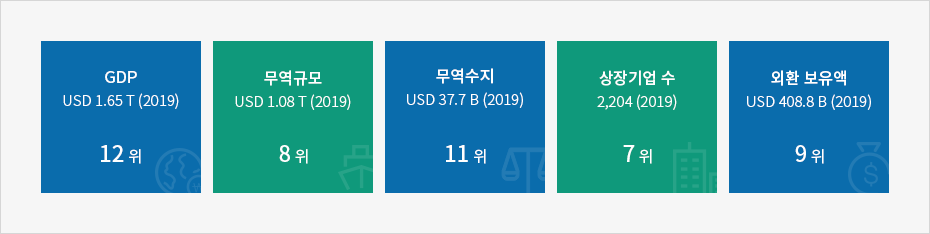
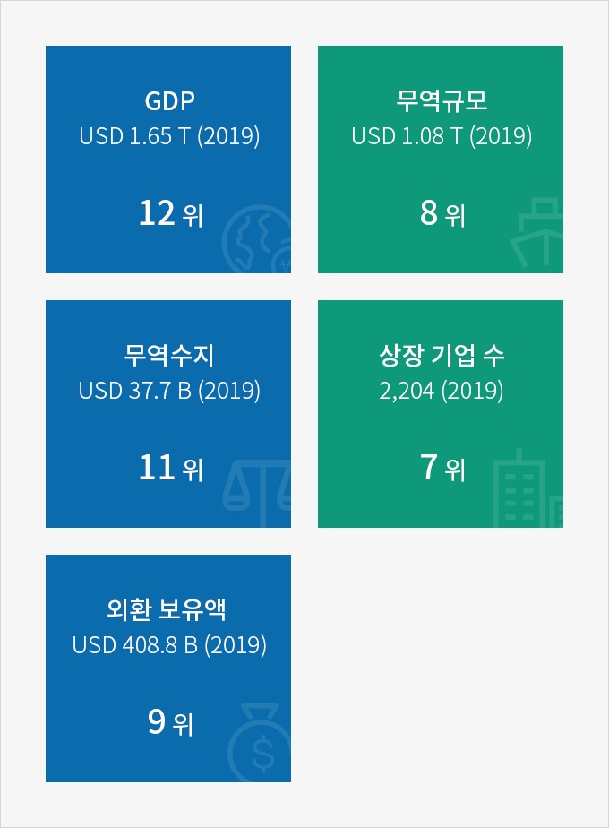

경제
- Home
- Why KOREA
- 경제
건실한 한국 경제
한국은 약 1.6조 달러의 경제규모를 가진 세계 경제 12위 국가이다.
한국의 무역규모는 세계 8위로 3년 연속 무역 1조달러를 달성하였으며, 외환보유액은 세계 9위로 건실한 경제 기반을 갖추고 있다.
한국의 무역규모는 세계 8위로 3년 연속 무역 1조달러를 달성하였으며, 외환보유액은 세계 9위로 건실한 경제 기반을 갖추고 있다.
한국 경제는 안정적이며, 기업의 경영과 성장을 지속적으로 뒷받침 하고 있다.
코로나19 영향에도 불구하고 2020년 9월 OECD는 한국의 2020년 경제성장률을 OECD 회원국 중 1위, G20 국가 중 2위로 전망하고 있다.
코로나19 영향에도 불구하고 2020년 9월 OECD는 한국의 2020년 경제성장률을 OECD 회원국 중 1위, G20 국가 중 2위로 전망하고 있다.
(참고: 한국 -1.0%, G20 -4.1%로 전망)



- GDP USD 1.65 T (2019) 12위
- 무역규모 USD 1.08 T (2019) 8위
- 무역수지 USD 37.7 B (2019) 11위
- 상장 기업 수 2,204 (2019) 7위
- 외환 보유액 USD 408.8 B (2019) 9위

※ 출처 : 국제통화기금(IMF), 한국무역협회(KITA), 한국은행(BOK), 한국거래소(KRX), 세계거래소연맹(WFE), Brand Finance
주요 경제자료 검색
인구·보건·복지
| 기관 | 통계정보 | Last | Reference | Previus | Frequency | Chart |
|---|---|---|---|---|---|---|
| 통계청 | 추계인구 | 51,780,579 | 2020 | 51,709,098 | 년(명) |  |
| 통계청 | 고령인구비율(65세 이상) | 15.7 | 2020 | 14.9 | 년(%) | |
| 통계청 | 합계출산율 | 0.918 | 2019 | 0.977 | 년(명) | |
| 통계청 | 의료기관수 | 93,184 | 2018 | 91,545 | 년(개소) | |
| 통계청 | 인구 천명당 의료기관 병상수 | 13.60 | 2019 | 13.60 | 년(개) | |
| 통계청 | 외국인등록인구 | 1,271,807 | 2019 | 1,246,626 | 년(명) | |
노동·가계
| 기관 | 통계정보 | Last | Reference | Previus | Frequency | Chart |
|---|---|---|---|---|---|---|
| 통계청 | 실업률 | 3.7 | 2020.10 | 3.6 | 월(%) | |
| 통계청 | 고용률 | 60.4 | 2020.10 | 60.3 | 월(%) | |
| 통계청 | 경제활동인구 | 28,116 | 2020.10 | 28,012 | 월(천명) | |
경기·기업·임금·물가
| 기관 | 통계정보 | Last | Reference | Previus | Frequency | Chart |
|---|---|---|---|---|---|---|
| 통계청 | 소비자물가지수 | 105.50 | 2020.11 | 105.61 | 월(2015=100) | |
건설·교통·과학
| 기관 | 통계정보 | Last | Reference | Previus | Frequency | Chart |
|---|---|---|---|---|---|---|
| 통계청 | 인터넷이용률 | 91.8 | 2019 | 91.5 | 년(%) | |
| 통계청 | 자동차등록대수 | 23,743,391 | 2020 | 23,677,366 | 년(대) | |
제조·서비스
| 기관 | 통계정보 | Last | Reference | Previus | Frequency | Chart |
|---|---|---|---|---|---|---|
| 통계청 | 온라인쇼핑몰 거래액 | 12,722.071 | 2020.06 | 12,055,233 | 월(백만원) | |
| 통계청 | 제조업생산지수(전년동월비) | -9.8 | 2020.05 | -5.1 | 월(%) | |
| 통계청 | 소매판매액지수(전년동월비) | 1.7 | 2020.05 | -2.2 | 월(%) | |
제조·서비스
온라인쇼핑몰 거래액
| 2019.08 | 2019.09 | 2019.10 | 2019.11 | 2019.12 | 2020.01 | 2020.02 | 2020.03 | 2020.04 | 2020.05 |
|---|---|---|---|---|---|---|---|---|---|
| 11,278,634 | 11,278,634 | 11,278,634 | 11,278,634 | 11,278,634 | 11,278,634 | 11,278,634 | 11,278,634 | 11,278,634 | 11,278,634 |
※ 출처 : 통계청 온라인쇼핑동향조사